データセットとして使う動画の選定とアノテーションの計画を立てた
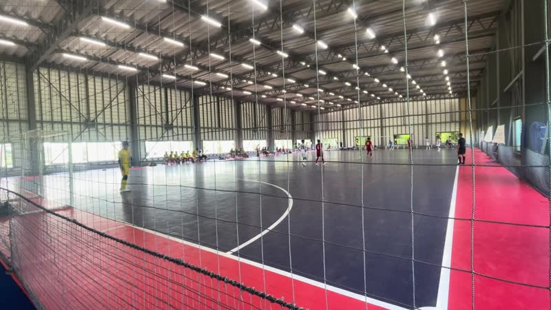
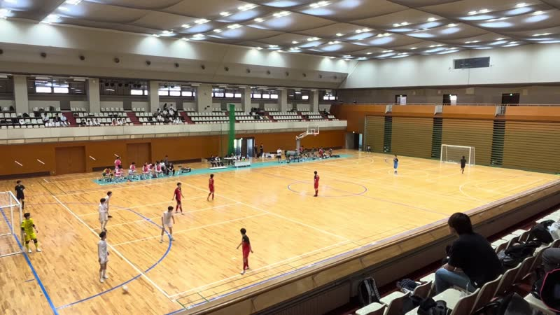
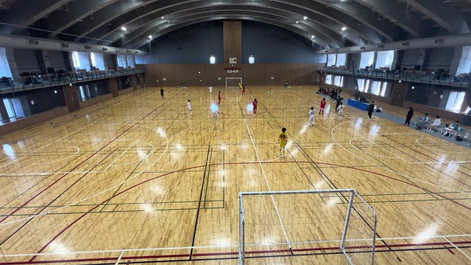
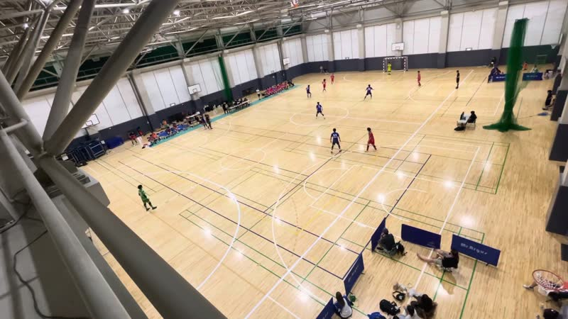
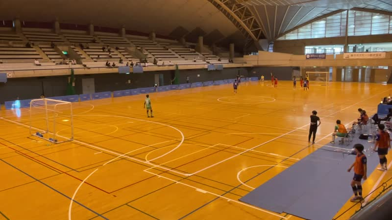
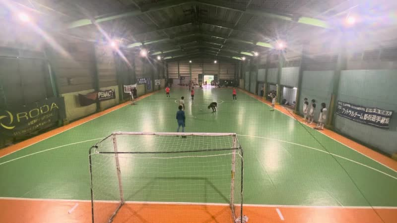
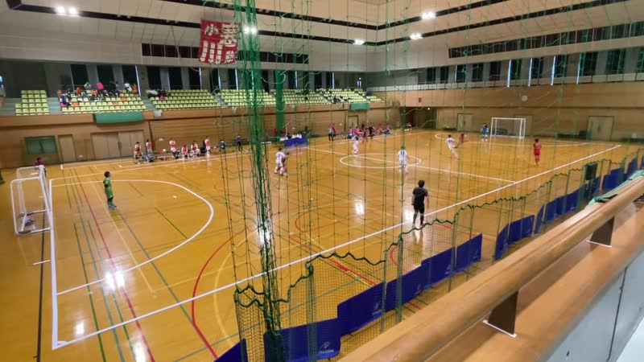
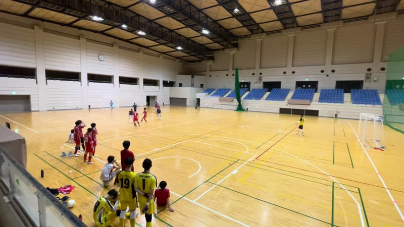
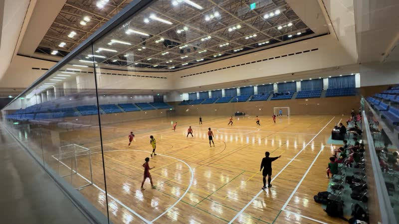
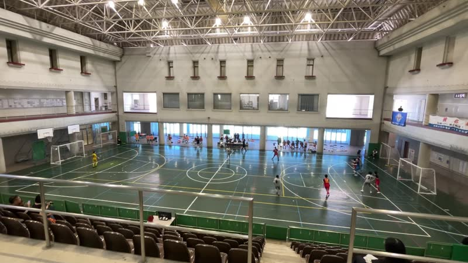
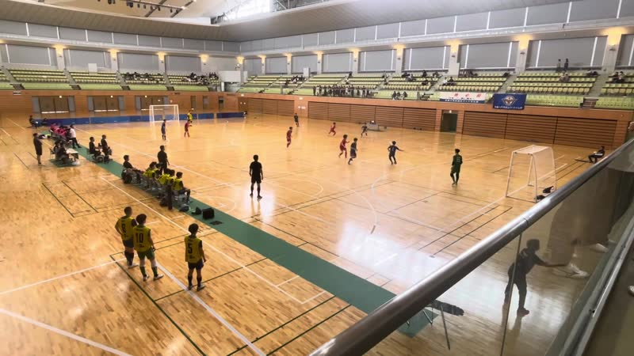
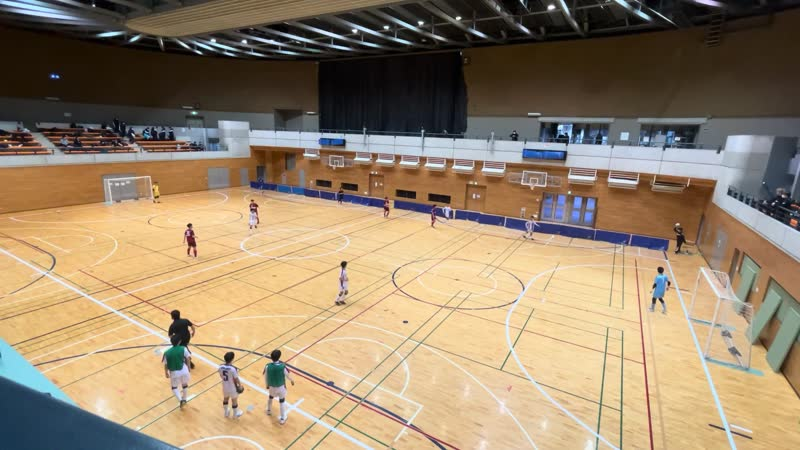
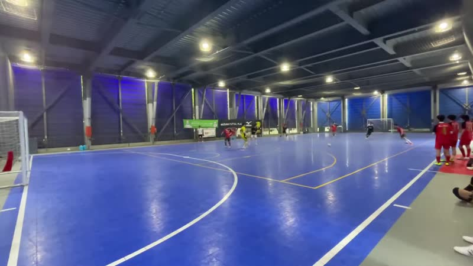
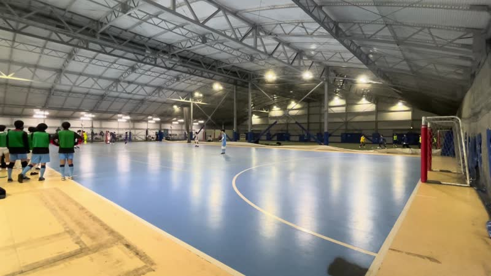
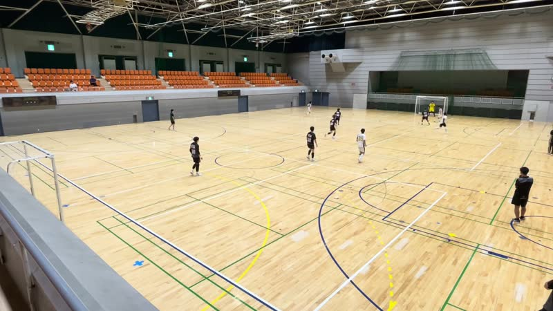
ロードマップ
全162本から、慶應の試合、会場が分かるもの、固定カメラの順に絞った。 固定カメラの判定は 固定カメラ判定 にある。 数回だけ構図を変える13本は、動いた時点で区間に切って残す。
絞り込みの3段（棒は映像の時間）
会場ごとの映像の時間（82本、43試合）
データセットを固定カメラの映像に絞るか
| 案 | 得られるもの | 懸念 |
|---|---|---|
| 固定カメラに絞る（82本、43試合） | コートのキャリブレーションが1本に1回で済む。視点がそろい、モデルの性質が安定しやすい | カメラが動く映像に弱くなり、アプリケーションとしての汎用性が下がりうる |
| 追従も含める（111本、56試合） | カメラが動く映像も学習と評価の対象になる | コートの基準点をフレームごとに推定する必要がある。 |
いまの案は折衷である。 研究の最初の段階では固定カメラに限り、アプリのデモでは次のように扱う。
Future Workとしてカメラが動く場合も対応させる。
Astraは優秀だがtoken消費が激しい。そこで2段階に分ける。 Astra の下書きを人が直して少数フレームに bbox を付け、それで RF-DETR を Fine-Tuning し、その出力を人が直す。 イベント（セットプレー・交代）時刻は43試合の全体に付ける。
| 段階とアノテーション | 区間 | 量 | 付け方 |
|---|---|---|---|
| 段階1 Astra による少数フレームの bbox | 15会場 × 3秒 × 20本（前後半10ずつ） | 4500 frames900s × 5fps | Astra が下書きし、人が直す |
| 段階2 Fine-Tuning した RF-DETR による bbox と ID | 1試合に連続5分 × 43試合 | 387,000 frames30 fps 換算で215分 | RF-DETR ＋ ByteTrack(＋ Astra ReID) の出力を、人が 5 fps で直し、間を補完。 |
| 段階3 セットプレー3種、交代、得点の時刻 | 試合全体 × 43試合 | 56.6時間 | ルールが出した候補を人が直す |
段階ごとに、近いデータセットと並べる。 点の位置は0から始まる等間隔の目盛りで、値の大きい順に並べる。
段階1：RF-DETR を競技の画像で Fine-Tuning した前例
| 例、競技と映像 | クラス | bbox を付けた 画像（枚） |
|---|
段階2：bbox と ID を付けたデータセット
| データセットと競技 | 試合 | 1本の長さ | シーケンス数 | アノテーションした 時間（分） |
アノテーションした フレーム |
|---|
段階3：イベント時刻を付けたデータセット
| データセット、競技とカメラ | 試合 | アノテーション | 総時間 （時間） |
イベント （件） |
|---|
段階1 の Astra の下書きと、段階2 の bbox と ID の量に過不足はあるか
| 案 | 人が直すフレーム | |
|---|---|---|
| 段階1 | 15会場 × 20本 × 15フレーム | 4,500 |
| 段階2 | 43試合 × 5分 | 64,500 |
| 43試合 × 2分 | 25,800 | |
| 15会場 × 5分 | 22,500 |
段階1 の4,500フレームは、RF-DETR を他競技で Fine-Tuning した前例（テニス 85枚から サッカー 42,750枚）の中ほどにあたる。 ただし1本の15フレームは5fpsで互いによく似ており、見え方の違いは300本分にとどまる。 段階1 の下書きを Astra で作ると、Codex の Plus プランで3週間かかる見込みである。 段階2 の5分 × 43試合は、既存のどのデータセットより大きい。 どちらも最初の3会場で実測してから決めたい。
4試合の10秒（5 fps で50フレーム）に、3手法で下書きを付けた。
| 手法 | 枠と ID の作り方 | 役割 |
|---|---|---|
| Deep-EIoU | YOLOX-x ＋ OSNet（SportsMOT で学習） | なし |
| Astra 1枚ずつ | 1依頼に画像1枚。ID は特徴点追跡で結ぶ | 選手、GK、審判 |
| Astra 複数フレーム | 1つの会話で11枚を続けて読み、枠と ID を書く | 選手、GK、審判 |
目視での比較で、精度は測っていない。
人は下書きを直すだけで、枠を一から描かない。
会場ごと（15会場）
試合ごと（43試合）
段階1 の bbox で Fine-Tuning するモデルを、会場ごとに作るか、1つの汎用モデルにするか
| 単位 | 得られるもの | 懸念 |
|---|---|---|
| 会場ごと（15モデル） | その会場の床の色、照明、カメラの角度に合わせた下書き | 1会場300フレームで足りるか未確認。モデルが15個になる |
| 1つの汎用モデル（15会場 ＋ Roboflow の公開画像） | 4,500フレームに公開画像を足せる。未学習の会場での精度を測れる | 会場ごとの量が偏る。公開画像は視点とクラス定義が違う |
いまの案は汎用モデルで、公開画像を入れるかは最初の3会場の学習曲線で決める。
中央大の10秒での比較。 複数フレームは読んだ画像が会話に積み上がるので、入力が約60倍になる。 段階1 では1本の15フレームを1依頼で渡し、積み上がりを避ける。
3秒クリップの下書きに要る週の枠（複数フレーム、ChatGPT Plus の週単位）
見積もりは docs/annotation_protocol.md の付録（1枚ずつの依頼103件の実測から換算、再試行分1割を加算）。
研究室で Codex を契約できないか
300本の下書きに Plus で約2.4〜3.0週かかる。 Pro（枠5倍、月100ドル）なら1週に収まるが、個人では高い。
未着手で、ベースラインは後日選ぶ。
| モデル | 学習ドメイン | これまでの目視の判定 |
|---|---|---|
| YOLO11x ＋ BoT-SORT | COCO | 検出は可、追跡は不可 |
| Deep-EIoU | SportsMOT | 可 |
| Deep-EIoU ＋ GTA（後処理） | ReID は SportsMOT | 可 |
| McByte（SAM ＋ Cutie） | SportsMOT ＋ SAM、Cutie | 不可 |
| RF-DETR Large | COCO | 審判は拾う、奥の選手を落とす |
未着手。 最初に、段階1 の3秒で RF-DETR を学習する学習曲線を回し、1会場に要る本数を決める（白子と城西で学習、FFC東川口で別会場の評価）。
次にやること
出典
docs/dataset.html、data/manifest.tsv（2026-09-11 時点）docs/annotation_protocol.mdexperiments/022-annotation-clips/（dlbox10、2026-09-13 に430本を検証）experiments/012-deiou-auto-label/output/*/annotations.jsondata/annotations/astra_raw_output/*/data/final/annotations.json。トークンは中央を回した2つの Codex セッションの記録（2026-09-08 と 09-09 開始）experiments/011-astra-auto-label/per-image-no-substitutes/output/（2026-09-14 実行）。審判の枠の数と見直しで消えた枠は 控え選手を推論させない版の報告experiments/011-astra-auto-label/per-image-inference/README.md の記録